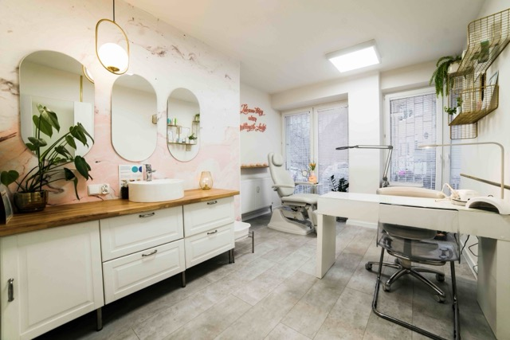
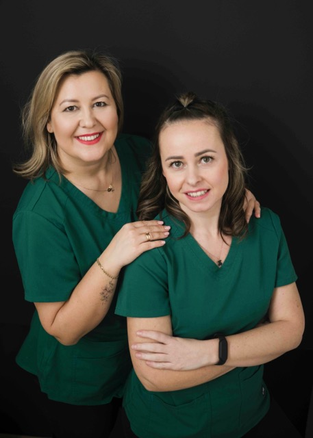

Podolog Olsztyn, gabinet pielęgnacji stóp Zdrowe stopy niosą szczęśliwych ludzi
Specjalistyczna pielęgnacja stóp to nie tylko estetyka, ale przede wszystkim zdrowie. W naszym gabinecie podologicznym w Olsztynie wykonujemy pedicure medyczny: profesjonalne, bezbolesne usuwanie zrogowaceń, modzeli i nagniotków oraz opracowanie paznokci z użyciem sterylnych narzędzi i nowoczesnego sprzętu. Pomagamy także przy wrastających paznokciach (klamry ortonyksyjne), kurzajkach i paznokciach zmienionych chorobowo.

Cennik Usług
Badanie mykologiczne z pobraniem materiału
Materiał wysyłany do laboratorium
O nas

Z pasji do zdrowia i piękna.
Witamy w naszym gabinecie - miejscu stworzonym z myślą o profesjonalnej pielęgnacji stóp i dłoni. Łączymy wiedzę medyczną, doświadczenie oraz indywidualne podejście, aby zapewnić naszym klientom najwyższy standard usług podologicznych, kosmetycznych i stylizacyjnych.
Jestem Agnieszka i jestem dyplomowanym specjalistą podologiem. Od wielu lat pomagam pacjentom w rozwiązywaniu problemów zdrowotnych stóp. Ukończyłam specjalizację z podologii i pielęgnacji stóp w TEB Edukacja, zdobywając tytuł specjalisty podologa. Wiedzę i umiejętności stale rozwijam, biorąc udział w licznych szkoleniach, seminariach i kongresach branżowych. Moja praca to nie tylko zawód - to pasja, dzięki której mogę skutecznie pomagać i dbać o zdrowie moich pacjentów. Bezpieczeństwo, higiena oraz komfort osób korzystających z moich usług są dla mnie absolutnym priorytetem.
W naszym zespole pracuje również Iza - stylistka rzęs, brwi i paznokci. Dzięki jej doświadczeniu, precyzji i estetycznemu wyczuciu oferujemy kompleksową pielęgnację, która pozwala zadbać nie tylko o zdrowie, ale i o piękny wygląd. Iza dba o to, by każdy detal – od perfekcyjnego manicure, przez stylizację brwi, po przedłużanie rzęs - był wykonany z największą starannością.
Tworzymy miejsce, w którym każdy może poczuć się bezpiecznie, profesjonalnie zaopiekowany i po prostu dobrze. Zapraszamy do zapoznania się z naszą ofertą oraz do regularnego dbania o swoje dłonie i stopy. One niosą Cię przez całe życie - daj im to, na co zasługują!
Najczęstsze pytania
Czym zajmuje się podolog?
Czy na wizytę potrzebne jest skierowanie?
Czy zabiegi podologiczne bolą?
Jak przygotować się do wizyty?
Ile trwa wizyta u podologa?
Jak sterylizowane są narzędzia?
Czy przyjmujecie osoby z cukrzycą?
Czy przyjmujecie dzieci?
Jak umówić wizytę i jak można zapłacić?
Galeria gabinetu


Lokalizacja
Gabinet podologiczny w Olsztynie. Gabinet Specjalistycznej Pielęgnacji Stóp i Dłoni Agnieszka Sawczuk
ul. Krzysztofa Mrongowiusza 6/4, 11-041 Olsztyn
Godziny otwarcia:
Pon-Pią: 9:00 - 18:00